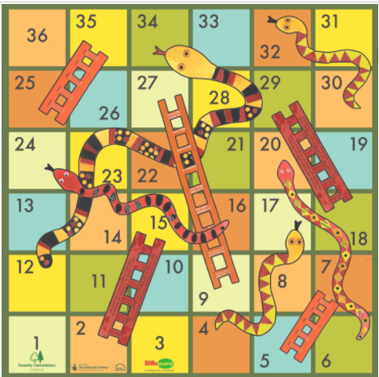
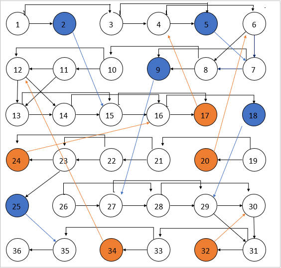
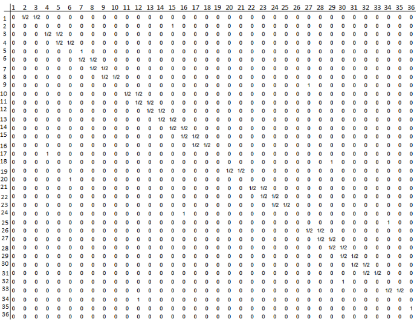
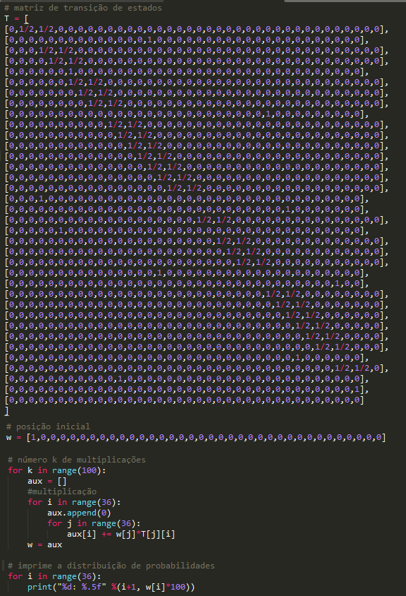
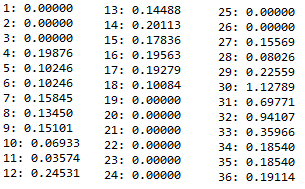
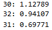
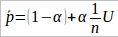
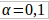
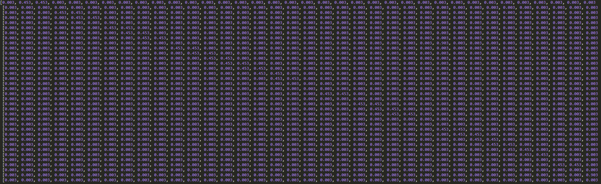
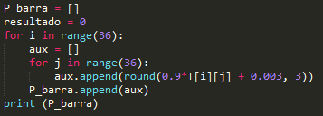

Snakes and Ladders é um jogo de tabuleiro que segue a figura abaixo.
O jogo funciona da seguinte forma: a cada rodada o jogador lança um dado não viciado e avança uma casa se a moeda mostrar cara e duas casas caso o resultado seja coroa. A partir disso, caso o jogador pare no pé de uma escada, ele automaticamente vai até o topo da escada e, caso pare na boca de uma cobra, ele escorrega até o rabo.
O jogador inicia o jogo no quadrado de número 1 e o jogo termina quando atinge o quadrado de número 36.
Cadeia de Markov
Um Processo Markoviano segue o princípio de que a probabilidade condicional de qualquer evento futuro, dado qualquer evento passado e o estado presente, é independente do evento passado e depende somente do estado presente. Ou seja, a cadeia de Markov é um processo que seu estado futuro depende apenas do seu estado atual, sendo que os estados passados não têm influência sobre o estado futuro.
Diagrama de estados da Cadeia de Markov
Para criarmos a Cadeia de Markov, é necessário estabelecer o diagrama de estados do problema. Para isso, todas as casas do tabuleiro serão representadas no diagrama como sendo os vértices e os caminhos de cada casa (vértice) serão representados pelas arestas.
Existem três situações possíveis para o problema Snakes and Ladders:
- Casa padrão: casa que não possui a base da escada nem a boca da cobra;
- Casa Ladder: casa que possui a base da escada;
- Casa Snake: casa que possui a boca da cobra;
Para representar essas casas, serão utilizadas três cores diferentes, da seguinte forma:
- Casa padrão: cor branca
- Casa Ladder: cor azul
- Casa Snake: cor laranja
O diagrama de estados para o problema é exibido na figura a seguir.
Matriz de Transição de Estados
A matriz de Transição de Estados mostra as probabilidades de transição de estados, ou seja, no caso do jogo, é uma matriz de tamanho 36x36 que relaciona todas as casas do tabuleiro mostrando a probabilidade de o jogador sair de uma casa e chegar à outra. A figura abaixo exibe a matriz de Transição de Estados.
Observamos na matriz que a partir de cada casa, o jogador possui no máximo duas opções para mudança de casas. Por exemplo, no início do jogo, quando na casa 1, o jogador tem duas opções para mudança: caso a moeda mostre “cara” ele avançará para a casa 2, caso seja “coroa”, avançará para a casa 3, logo ele tem 50% de chance de ir para a casa 2 e 50% de ir para a casa 3. A outra opção de mudança são nas casas do tipo “Casa Ladder” ou “Casa Snake”. Nessas casas, o jogador tem 100% de chance de ir para uma casa específica. Por exemplo, caso o jogador esteja na casa 2, ele só poderá se mover para a casa 15, logo, a chance de o jogador ir para a casa 15 é de 100%, e para as demais casas, 0%.
Distribuição Estacionária da Cadeia de Markov
Para sabermos as probabilidades de o jogador passar por cada casa do tabuleiro durante o jogo, faremos a Distribuição Estacionária da Cadeia de Markov em questão. Com isso, será possível obter a probabilidade de o jogador vencer o jogo.
Para isso, será utilizado o Power Method, que consiste em multiplicar o vetor de probabilidade de cada vértice pela Matriz de Transição de Estados exibida na figura 3, o número k de vezes que se deseja. Um script em Python foi desenvolvido para calcular a distribuição estacionária da cadeia de Markov. Nesse script foi declarada a Matriz de Transição de Estados T, a posição inicial W e então o procedimento de multiplicação, utilizando k = 100. O código completo em python é exibido na figura abaixo.
Executando o Script acima obtivemos a probabilidade de cada casa. O resultado é exibido na figura a seguir.
Pode-se observar que alguns vértices ficaram com 0% de probabilidade, e isso ocorre por causa de dois motivos: por serem visitados pouquíssimas vezes durante a caminhada aleatória do método Power Method, ou porque não é possível acessá-los.
Analisando os resultados da aplicação do Power Method com k = 100, vemos que a probabilidade de se atingir a casa 36 é de 0.19114%, logo, a probabilidade de um jogador vencer o jogo é de 0. 19114%.
Para verificarmos quais os estados mais prováveis de serem acessados, basta analisarmos as maiores probabilidades. Os três estados mais prováveis são os da figura abaixo.
Page Rank
Para especificarmos a matriz P_barra referente ao modelo Pagerank, foi utilizada a fórmula exibida na equação abaixo.
Tal que  e n = 36. Obteve-se, então, a matriz P_barra da figura exibida abaixo.
Para gerar a matriz P_barra foi utilizado o script em Python exibido na figura a seguir.
Após isso, o script do Power Method exibido na figura 4 foi aplicado nessa matriz, e o resultado obtido é mostrado na figura a seguir.

Comparando os resultados da figura 9 com os resultados da figura 5, percebemos a grande diferença obtida nos resultados da distribuição estacionária. As porcentagens obtidas na distribuição estacionária realizada na matriz T é consideravelmente menor do que as obtidas na aplicação do Power Method na matriz P_barra.